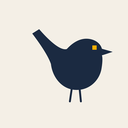
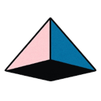
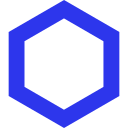
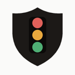

Security & governance AI agent tools
43 security & governance tools in the AgentScout directory, each with a link-checked listing. Tools that keep agents safe and accountable: guardrails, prompt-injection and MCP scanners, credential brokers, sandbox policies and AI security-operations agents.
There are 43 security & governance tools: 26 open source, 4 free or freemium, 10 paid, usage-based or enterprise, 3 pricing on the maker's site.
Tasks in this category
Showing 43 of 43 tools
Decionis
Decionis is an approval gateway for actions taken by AI agents. It sits in front of consequential API calls such as payments, price changes and orders, checks each one against your policy before it runs, and only lets it through with a single-use permit, keeping a signed record of every decision for audit.
Added
Aletheore
Aletheore audits code repositories and backs every finding with evidence. Its deterministic scanner looks for leaked secrets, vulnerable dependencies and dead code, it can watch live endpoints and draw architecture maps, and it reviews pull requests automatically through a GitHub Action. A built-in MCP server lets coding agents run the same audits.
Added
SecureAuth MCP Authority
SecureAuth MCP Authority is a security gateway for the MCP tool calls agents make. Every call is checked against the person the agent is acting for, using that person's own login and rules down to individual arguments, and each decision is logged so enterprises can see and control what their agents are allowed to do.
Added
Speakeasy Gram
Gram is Speakeasy's open-source platform for building, hosting and governing MCP servers. Teams can turn APIs into curated MCP toolsets, host them, and manage which agents and people may use which servers from one control plane, with sign-in, access policies and usage visibility; its own MCP server lets an agent manage that setup directly.
Added
0.security
0 is an open, self-improving AI operating system for offensive security work. Its agents investigate code and binaries for vulnerabilities, test defenses, verify findings with working proofs and help fix the issues, and the team behind it publishes the advisories it has found in real open-source projects.
Added
1Password for Agents
1Password for Agents lets personal AI agents sign in to your accounts without ever seeing your passwords or one-time codes. When a supported agent reaches a sign-in page, it asks for a credential from your vault; you approve the request, and 1Password fills it straight into the site, so the secret never enters the model or its memory. You can see and manage which agents have access to what. It launched with integrations for agents such as Claude Duet, ChatGPT Work and dots, Meta's Muse and Grok Bot, and needs a 1Password plan.
Added
Wren Pre-sign Check
Wren Pre-sign Check is a pay-per-call x402 API that an AI agent calls before it signs anything with its wallet. Send a transaction (to + data), an EIP-712 typed-data payload or untrusted text, and it returns block, review or allow, the decoded call in plain words and every finding: unlimited approvals, Permit and Permit2 signatures, setApprovalForAll, EIP-7702 delegation, contract deployment and injected instructions. With an optional wren-guard policy (allowlist, spenders, caps) it also blocks unknown recipients, over-cap amounts and lookalike addresses. It is a static check and stores nothing you send; free demos show real output.
Added
OpenAPPA
OpenAPPA is a deterministic guardrail that sits between an AI agent and its tools and tracks how data flows across tool calls, instead of asking a second model to judge each call. Policies decide whether untrusted or sensitive data may reach a given action, which blocks data exfiltration caused by prompt injection or hallucination while letting agents finish their tasks. It plugs into Claude Code, Pi, OpenCode, kAgent and Archestra, comes with reusable policy "batteries", validation, observability and reporting, and is backed by a NeurIPS workshop paper with published benchmarks. It is in preview as an open RFC.
Added
Halofy
Halofy is an access and governance layer for a team's AI agents, giving every agent organizational context through one identity and policy model with provenance and audit, alongside a desktop AI workstation that turns power users' agent practices into shared policies.
Added
HOL Guard
HOL Guard is a free, open-source (Apache-2.0), local-first security layer for AI coding agents such as Claude Code, Codex, Cursor and GitHub Copilot CLI. On supported integrations it checks risky shell commands, reads of secret-bearing files, package installs and new or changed MCP tools before they run, lets you allow, ask or block each action, and keeps a local record for review. It installs with pipx (hol-guard) and works offline; optional Guard Cloud adds synced approvals, team policy and dashboards.
Added
Phase
An open-source secrets manager that syncs API keys and environment variables to apps, CI and agents with end-to-end encryption and access control. Free tier, Pro from $10 per user a month, or self-host.
Added
ThinkWatch Lite
A local gateway that sits between your coding agents and model providers, letting you switch upstreams, redact secrets before they leave your machine, block dangerous tool calls and see the cost of each request.
Added
Eleven
An agent-first reverse-engineering app for macOS, Windows and Linux: load any app or binary and ask your AI agent what it does while it disassembles and analyzes the code for you.
Added
open-kritt
A self-hosted AI security research tool that orchestrates agents to hunt for vulnerabilities in a codebase and then validate and rank what they find; managed scans are also offered.
Added

wren-guard Pro
wren-guard Pro is a TypeScript guard library for AI agents that hold or move funds on Base and other EVM chains (viem, CDP AgentKit, Privy, Eliza and similar stacks). It enforces allowlisted, capped and simulated sends, decodes calldata and signatures to flag unlimited approvals, Permit, Permit2, setApprovalForAll and EIP-7702 delegation, screens for injected instructions and watches nonces. It ships with an 89-scenario attack corpus drawn from public agent wallet incidents and a GitHub Action that fails CI if your agent's policy would let a known attack through. The original Python wren-guard is free and MIT licensed.
Added
Dropzone AI
AI SOC analyst agents that investigate security alerts autonomously.
Added
Guardrails AI
Open-source framework for validating LLM inputs and outputs with configurable guardrails.
Added
Mindflow
No-code automation and AI agents for security and IT operations.
Added
Zenity
Security and governance for AI agents across enterprise platforms.
Added
Simbian
AI agents for security operations, threat hunting and response.
Added
Prophet Security
Agentic AI SOC analyst that triages and investigates alerts.
Added
Token Security
Security for non-human and AI agent identities.
Added
Strix
Open-source AI agents that run penetration tests on your app to find and help fix security vulnerabilities.
Added
PentAGI
Autonomous multi-agent system for running penetration testing tasks.
Added
AI-Infra-Guard
Tencent's AI red-teaming platform that scans agents, skills and MCP servers for risks.
Added
Agent Governance Toolkit
Microsoft toolkit for policy enforcement, identity and sandboxing for AI agents.
Added
Failproof AI
Observability and policy enforcement for AI agent harnesses.
Added
Tracecat
Open-source security automation platform for teams and AI agents.
Added
PentestAgent
Agent framework for black-box security testing and bug bounty work.
Added
Snyk Agent Scan
Snyk's scanner for security risks in MCP servers and agent skills.
Added
Almanax
AI security engineer that finds vulnerabilities in applications and smart contracts and reviews pull requests; acquired by depthfirst (June 2026).
Added
Octane
Agentic security analysis that finds exploitable vulnerabilities in mission-critical code, including DeFi smart contracts.
Added
Mantis
Google's toolkit for AI coding agents to autonomously find, reproduce and patch software vulnerabilities in isolated environments.
Added
Agent Vault
Infisical's open-source credential broker that proxies API calls for AI agents so they never hold secrets themselves.
Added
ADR
Uber's Agentic AI Detection and Response system that secures employee and customer-facing AI agents with observability and threat detection.
Added

Superagent
SDK for AI agent safety that blocks prompt injections and unsafe tool calls, redacts PII and secrets, and runs red-team scenarios.
Added
Delve
Compliance automation that uses AI agents to handle SOC 2, HIPAA and GDPR busywork.
Added

Sonatype MCP
Sonatype's dependency-management MCP server that gives coding agents component versions, security analysis and Trust Score recommendations.
Added
Cisco MCP Scanner
Cisco's open-source scanner that checks MCP servers and tools for malicious or risky behaviour using YARA rules and LLM analysis.
Added
Pragor
Coordination and governance layer for teams of people and AI agents, not an autonomous agent: a shared board with tasks, directed messages, approvals, files and an attributable activity record, where agents connect over REST or project MCP access.
Added
Infisical
Open-source platform for managing secrets, certificates and privileged access, including scoped credentials for AI agents.
Added
CyberStrike
Terminal agent for authorized penetration testing that runs recon, vulnerability discovery and reporting with specialized security agents on your own LLM.
Added

Is My Agent Safe
Is My Agent Safe explains your OpenClaw security audit and version in plain English with a red, amber or green result that puts the most important finding first and flags versions missing published security fixes; free check, full report $29 one-off, Agency seats $99/month for US and UK agencies.
Added
Top security & governance repos on GitHub (28)
| Repo | GitHub stars | Licence | Last push |
|---|---|---|---|
| Strix ↗ | 71,768 | Apache License 2.0 | 2026-10-24 |
| PentAGI ↗ | 32,361 | MIT | 2026-10-22 |
| Infisical ↗ | 29,981 | — | 2026-10-24 |
| Guardrails AI ↗ | 7,559 | Apache License 2.0 | 2026-08-26 |
| AI-Infra-Guard ↗ | 7,088 | Apache License 2.0 | 2026-10-22 |
| Superagent ↗ | 6,772 | MIT | 2026-08-25 |
| Failproof AI ↗ | 6,521 | MIT | 2026-10-25 |
| Agent Governance Toolkit ↗ | 6,467 | MIT | 2026-10-23 |
| Tracecat ↗ | 3,863 | GNU AGPL v3.0 | 2026-10-24 |
| CyberStrike ↗ | 3,247 | — | 2026-10-14 |
| PentestAgent ↗ | 3,210 | MIT | 2026-09-21 |
| Snyk Agent Scan ↗ | 3,169 | Apache License 2.0 | 2026-10-22 |
| Mantis ↗ | 2,530 | — | 2026-10-25 |
| Agent Vault ↗ | 2,423 | — | 2026-10-22 |
| open-kritt ↗ | 2,333 | — | 2026-10-22 |
Top 15 of 28 by stars. Stars and licence come from each repo, checked when the listing was last verified.
All categories
Facts come from our directory listings; pricing is as each maker states it. Check official sites before you choose.